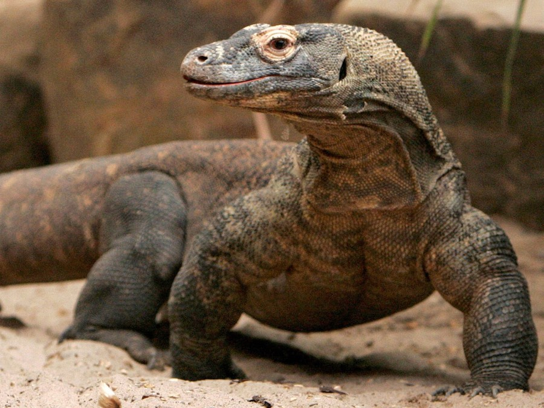

Komodo merupakan hewan yang sangat langka karena jumlahnya yang sedikit, hanya terdapat di Indonesia yaitu tepatnya di pulau komodo. Hewan ini juga termasuk spesies kadal paling besar di dunia yang rata-rata memiliki panjang 2-3 meter dan berat bisa mencapai 100 kg. Di alam bebas, habitat komodo telah mengalami penyusutan dan terancam punah karena aktifitas manusia. Oleh sebab itu, maka IUCN (International Union fot the Conversation of Nature) memasukkan komodo termasuk sebagai hewan yang langka. Hewan ini pun termasuk salah satu hewan langka yang dilindungi pemerintah Indonesia.